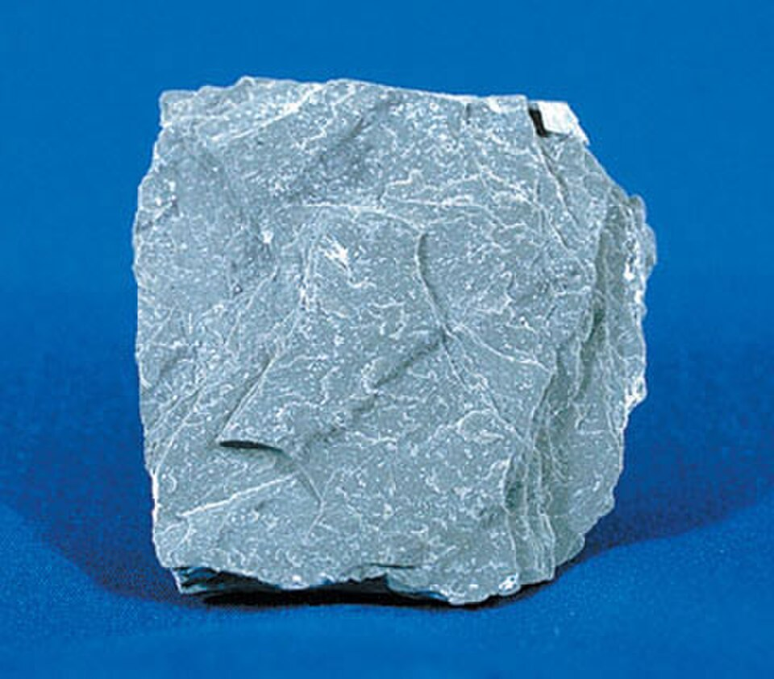
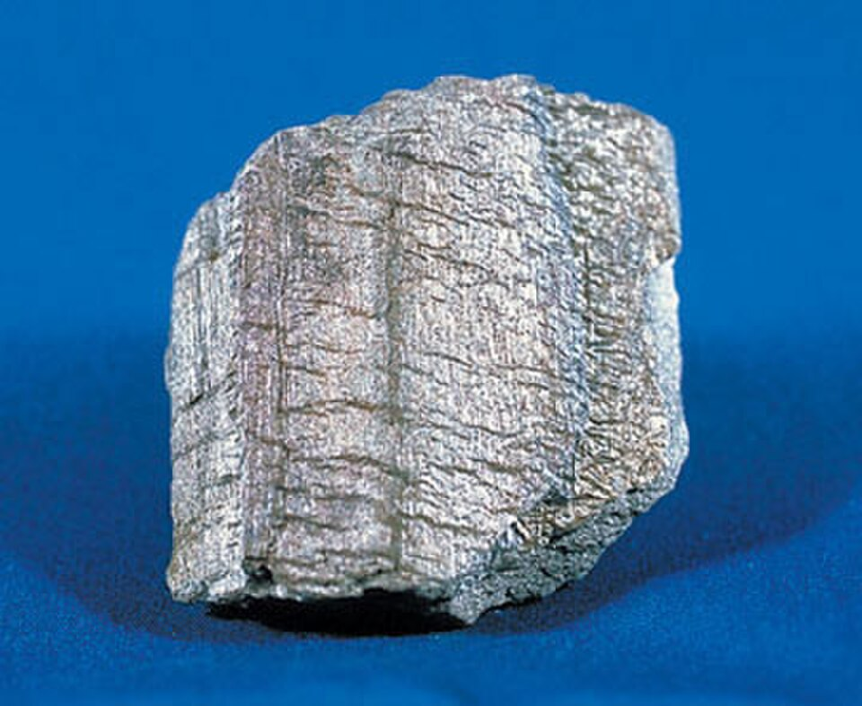
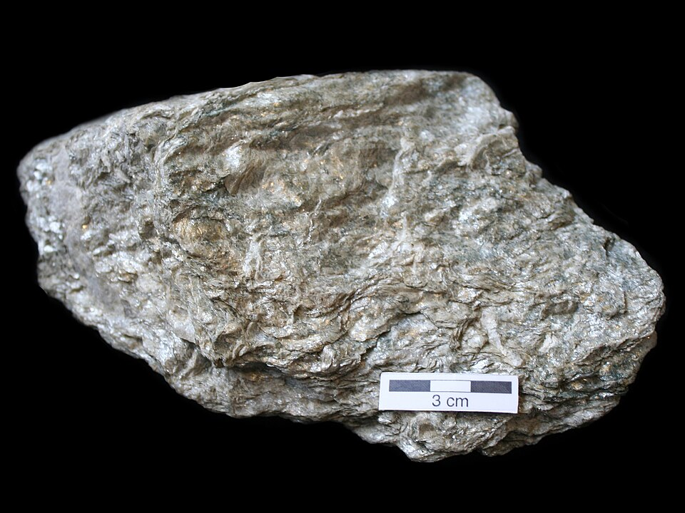
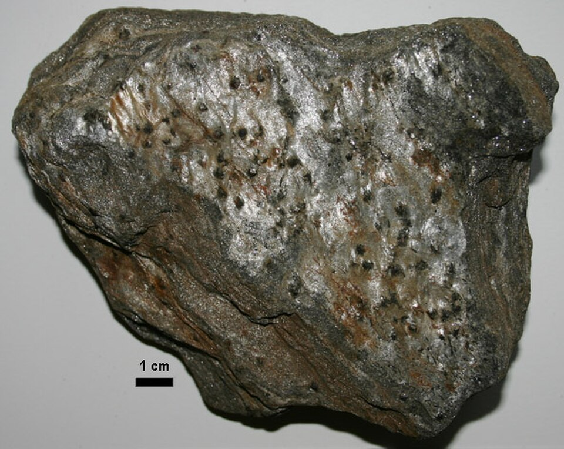
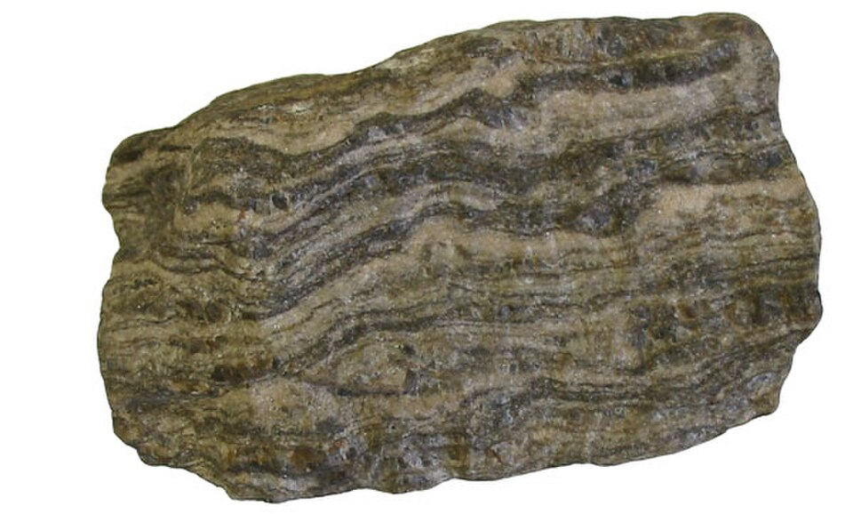
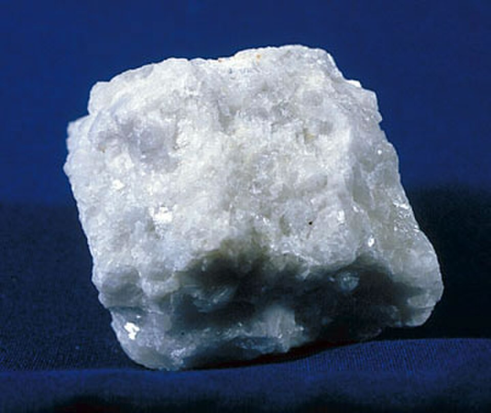
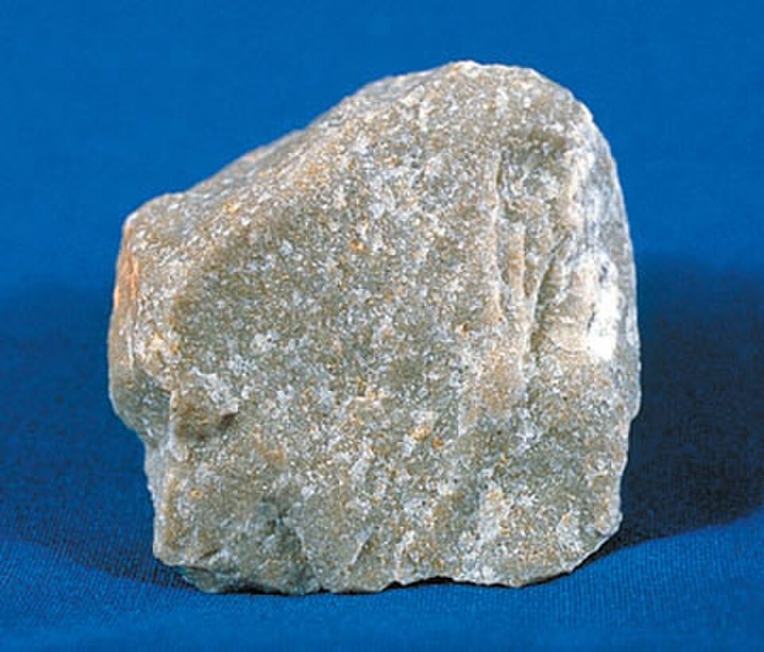
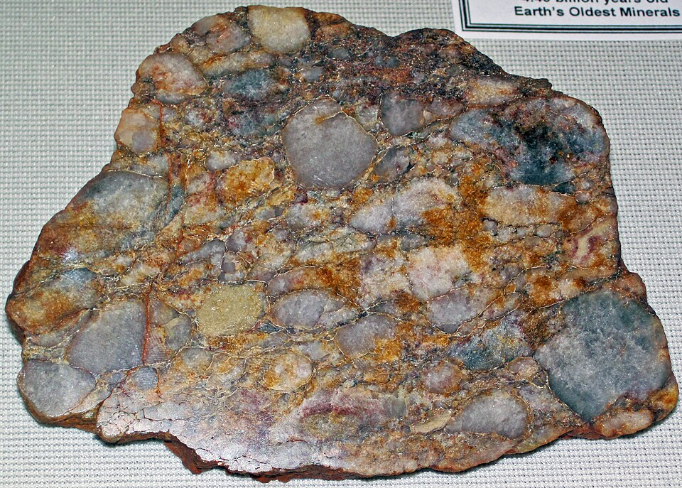
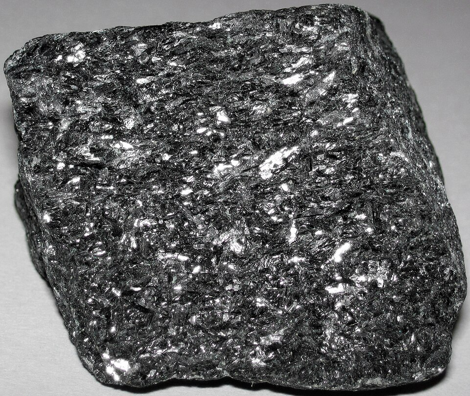
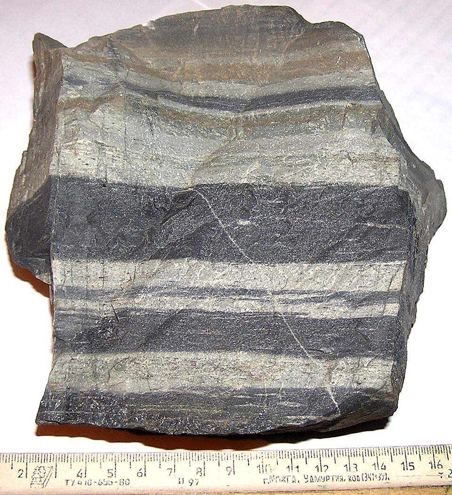

EES 2001 · Physical Geology

Slate is the lowest-grade metamorphic product of shale. Clay minerals have been slightly recrystallized into microscopic mica and chlorite, but the grains remain too small to see without a microscope. The key property is slaty cleavage — the rock splits along perfectly flat parallel planes that may be at a high angle to the original sedimentary bedding. This is distinct from the bedding-plane fissility of shale.
Slate is harder (won't crumble when scratched), has a clanking sound when struck, and breaks along cleavage planes that cut across original bedding. Shale breaks along bedding and has a duller, earthier luster. Slate may have a slight metallic sheen.
The fine-grained, platy character and dark color indicate a shale (clay-rich) protolith. The preserved fine texture and flat cleavage confirm only low-grade metamorphism has occurred.

Phyllite is intermediate between slate and schist. Mica and chlorite crystals have grown larger than in slate but still cannot be individually identified without magnification. The surface shows a distinctive silky metallic luster — far shinier than slate — and the foliation is often crinkled or corrugated rather than perfectly flat.
Chlorite is the characteristic index mineral of phyllite, giving the rock its often greenish tint. Muscovite is also present in fine flakes but not yet large enough to see individually.
The fine-grained character and clay-mineral-derived mica/chlorite confirm a shale or siltstone protolith. The rock no longer resembles shale — the original bedding is obliterated and foliation has fully developed.

Schist represents a major step up in metamorphic grade from phyllite. The defining feature is schistosity — a foliation defined by the alignment of visible, identifiable platy minerals (mainly micas). The rock has a sparkling appearance and feels "flakey" — it readily breaks along the foliation planes.
Muscovite (white/silver mica) and biotite (black mica) are the primary foliation-forming minerals. Quartz and feldspar are also present in granular form. The specific combination and any porphyroblasts present are used to give schist a more precise name (e.g., biotite-muscovite schist).
The abundant mica, derived from clay mineral recrystallization at intermediate temperatures, confirms a clay-rich (shale) protolith. All evidence of the original sedimentary texture is gone.

Garnet schist is a mica schist that has reached temperatures and pressures sufficient to stabilize garnet as an index mineral. The garnet porphyroblasts (large crystals that grew within the finer-grained matrix) are typically dodecahedral — 12-sided — and deep red to maroon in color. They stand out prominently against the silvery mica background.
The term porphyroblast refers to large crystals that grew within a finer-grained metamorphic matrix, analogous to phenocrysts in igneous rocks. Garnets often "trap" earlier-formed minerals as inclusions as they grow, preserving a record of the rock's metamorphic history.
The presence of garnet indicates higher temperature and pressure conditions than a simple mica schist without garnet. This rock experienced deeper burial or greater tectonic compression than M-3 (Mica Schist).

Gneiss represents the highest-grade foliated metamorphic rock. At these conditions, minerals have fully segregated into alternating light-colored bands (dominated by quartz and feldspar) and dark-colored bands (dominated by biotite ± hornblende). The original protolith is completely unrecognizable.
The wavy or folded appearance of gneiss in outcrops is due to plastic deformation (strain) at high temperatures and pressures — the rock was literally flowing like a very stiff solid. The banding itself represents the foliation; the folds represent deformation of that foliation after it formed.
Gneiss can form from many protoliths. A shale-derived gneiss (paragneiss) tends to have more biotite; a granite-derived gneiss (orthogneiss) tends to have more feldspar. At the high grade of gneiss, distinguishing the two can be very difficult.

Marble forms when limestone (or dolostone) is metamorphosed. Recrystallization of calcite (or dolomite) produces interlocking crystals of variable size — from fine "sugary" to coarse sparkling grains. The original fossil content, oolites, and sedimentary structures of the limestone are obliterated.
Marble derived from limestone fizzes vigorously with cold dilute HCl. Marble derived from dolostone fizzes weakly, or more strongly only when powdered. This test distinguishes the two varieties.
Calcite is not a platy mineral, so it does not align under directed stress the way micas do. Marble therefore lacks foliation regardless of the metamorphic grade. Color banding in some marble varieties reflects original sedimentary layering, not metamorphic foliation.

Quartzite forms when quartz sandstone is metamorphosed. Heat and pressure cause the quartz grains to recrystallize and fuse together — the grain boundaries dissolve and reform as a continuous interlocking mosaic of quartz crystals. This eliminates the void spaces and cementing material of the original sandstone.
The critical test: scratch the surface and check if grains rub off. In sandstone, individual grains detach easily. In quartzite, the surface remains intact because the grains are interlocked. Quartzite also breaks across grains (conchoidal to irregular fracture through the grains) rather than around them.
Quartz is not a platy mineral and does not align under stress. Quartzite therefore lacks foliation even if it formed under directed stress. Color reflects trace impurities in the original sandstone (iron oxides = pink/red; organic matter = gray).

Metaconglomerate forms when conglomerate undergoes metamorphism. The matrix between the clasts recrystallizes and fuses with the clasts, creating an interlocked texture. The original rounded pebbles remain visible — this is the key evidence for the conglomerate protolith.
Strike the rock: conglomerate breaks around pebbles (along the weaker matrix-clast boundary); metaconglomerate breaks through pebbles (the matrix is now as strong as or stronger than the clasts). Also, individual clasts in metaconglomerate cannot be loosened by hand.
The visible rounded clasts are unambiguous evidence of a conglomerate protolith. The rounded shape of the clasts shows they were transported by water before being lithified and subsequently metamorphosed.

Amphibolite forms when mafic igneous rocks (basalt, gabbro) are metamorphosed under intermediate- to high-grade conditions. The original pyroxene and plagioclase of the igneous rock are replaced by hornblende (an amphibole) and new plagioclase through neocrystallization. The result is a dark, dense rock dominated by blade-like hornblende crystals.
Look for elongated black crystals with two cleavage directions that intersect at approximately 60° and 120° (unlike pyroxene, which cleaves at ~90°). Hornblende crystals in amphibolite are often aligned, giving some specimens a weakly foliated appearance.
The mafic (dark, Fe/Mg-rich) composition — dominated by hornblende and plagioclase — indicates a mafic igneous protolith (basalt or its coarse-grained equivalent, gabbro). This composition could not be derived from a sedimentary rock.

Hornfels is the general term for a fine-grained, non-foliated rock produced by contact metamorphism — heat from an igneous intrusion "baking" the surrounding country rock. Because contact metamorphism involves heat but not directed pressure, no foliation develops. The original rock is essentially recrystallized in place.
Contact metamorphism involves isotropic (equal in all directions) heat, not directed stress. Without directed stress, there is no force to align platy minerals in one direction, so no foliation develops. The texture becomes granoblastic — equant interlocking crystals with no preferred orientation.
Hornfels is a non-specific name — it can form from shale, limestone, sandstone, or even igneous rocks. The specific mineralogy of the hornfels reflects the protolith composition, but the fine-grained, baked appearance is consistent regardless. Hornfels from shale often contains dark silicate minerals; from limestone it may be lighter in color.